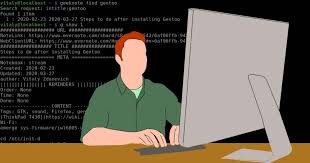
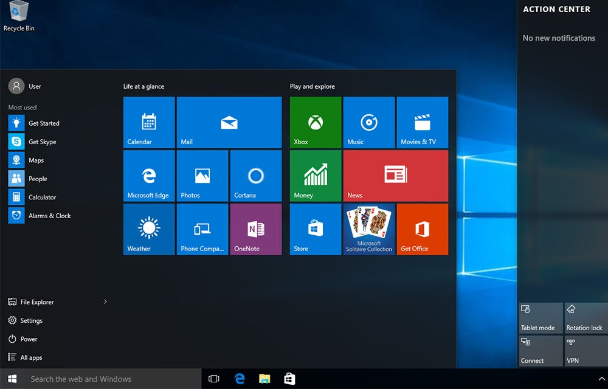

Interface CLI
Uma interface de linha de comando (CLI) é um mecanismo de software que você usa para interagir com o sistema operacional usando o teclado. Outro mecanismo é uma interface gráfica (GUI), que hoje é popular em todas as aplicações e sistemas de software.

Interface GUI
A Interface Gráfica do Usuário (GUI) é uma forma de interação com dispositivos eletrônicos por meio de elementos gráficos, como ícones, botões e menus. A GUI é amplamente utilizada em diversos sistemas operacionais, como o Windows, macOS e Linux, além de dispositivos móveis, como iOS e Android.
